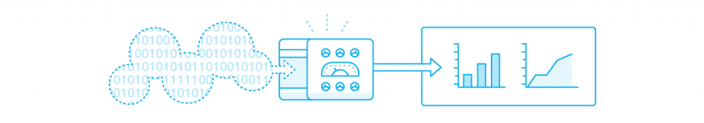
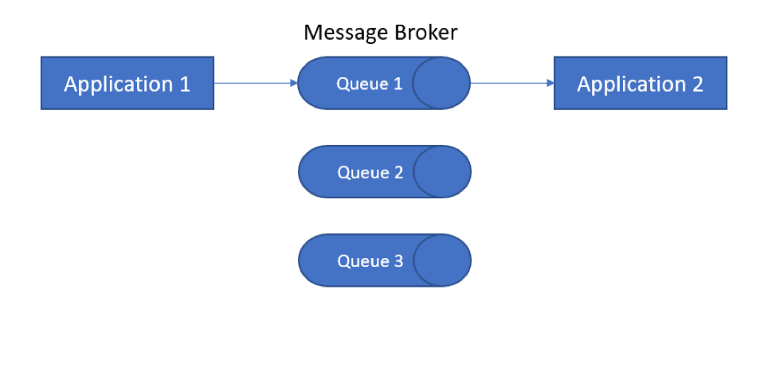
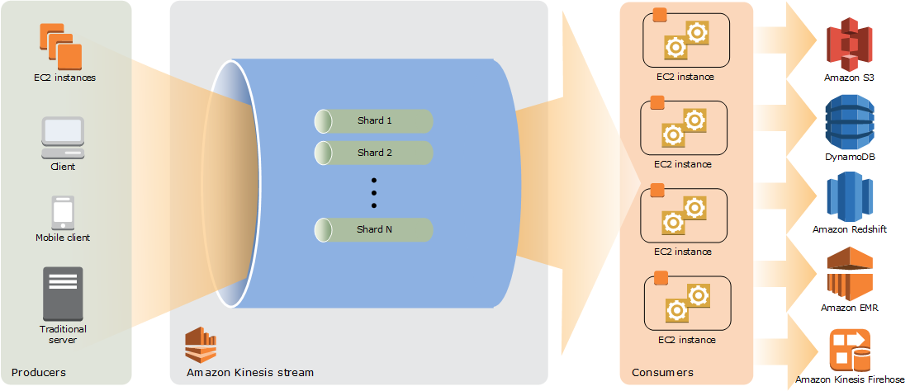
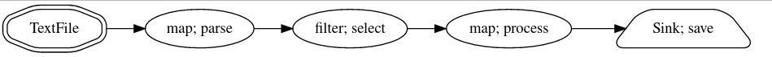

Przetwarzanie równoległe i strumieniowe
Wykład 8
Przetwarzanie strumieniowe: architektury, usługi chmurowe i biblioteka Streamz


Plan wykładu
wsad a strumień, zastosowania, okna, czas zdarzenia i spóźnione dane
przykład szklarni, broker, gwarancje, backpressure, MQTT, skalowanie po kluczu, Lambda i Kappa
Kinesis, usługi AWS / Azure / Google Cloud, Spark, biblioteki Pythona
emit, map, filter, accumulate, okna, łączenie, czas, back pressure, Dask
Co już znamy: potoki generatorów (wykład 2), wątki i kolejki, executory. Dziś zobaczymy, skąd biorą się dane strumieniowe, jak płyną przez system i jak przetwarzać je w Pythonie.
Brokery logów zdarzeń i rozproszone silniki strumieniowe omówimy na kolejnych wykładach.
Strumień danych (data stream)
Strumień to nieograniczony (unbounded) ciąg zdarzeń: dane napływają tak długo, jak działa źródło, i nie mają ustalonego końca.
- Każde zdarzenie (event) to mały rekord: klucz, wartość i znacznik czasu.
- Zdarzenia są niezmienne: dopisujemy nowe, nie poprawiamy starych (append-only).
- Przykłady: kliknięcie w link, odczyt czujnika, transakcja kartą, wpis w logu serwera.
{"key": "czujnik17", "ts": "2026-12-16T08:00:05Z",
"value": {"temp": 23.2, "wilg": 42}}


Generator z wykładu 2 to też strumień: dostarcza elementy jeden po drugim i może być nieskończony.
Przetwarzanie wsadowe a strumieniowe
Przetwarzanie wsadowe (batch processing): dane są gromadzone w paczki (np. z całego dnia) i przetwarzane okresowo. Wynik pojawia się po przetworzeniu całego wsadu.
Przetwarzanie strumieniowe (stream processing): każde zdarzenie jest przetwarzane zaraz po nadejściu, a wynik jest aktualizowany na bieżąco.

To ta sama różnica co między listą a generatorem z wykładu 2: lista czeka na wszystkie elementy, generator oddaje je po jednym.
Wsad a strumień: symulacja
Czerwone kropki to odczyty powyżej 30 °C, czyli alarmy. Zmień okres wsadu i porównaj opóźnienia.
Zastosowania i przypadki użycia
Zastosowania
- Monitorowanie dowolnej liczby strumieni zdarzeń w narzędziach analitycznych.
- Wykrywanie i analiza wzorców zachowań.
- Reagowanie na zdarzenia w momencie ich wystąpienia.
- Automatyczne działania bez udziału człowieka.
- Przewidywanie zdarzeń.
Przypadki użycia
- Clickstream analytics: śledzenie zachowania użytkowników na stronach WWW.
- IoT: analiza danych z czujników w czasie rzeczywistym.
- Cyberbezpieczeństwo: wykrywanie ataków DDoS.
- Fraud detection: podejrzane transakcje bankowe.
- Analiza logów: wykrywanie anomalii w systemach.
- Logistyka: śledzenie pojazdów i przesyłek (GPS).
Sprawdź się: wsad czy strumień?
Miesięczny raport zużycia wody w szklarni.
Wsad: wynik potrzebny raz w miesiącu, liczy się kompletność danych, a nie opóźnienie.
Blokada karty po podejrzanej transakcji.
Strumień: decyzja musi zapaść w ciągu sekund, zanim oszust zrobi kolejne zakupy.
Włączenie wentylacji, gdy temperatura przekroczy 30 °C.
Strumień: sterowanie w pętli zwrotnej wymaga reakcji na bieżący odczyt.
Trening modelu prognozy plonów na danych z 5 lat.
Wsad: model uczymy na całej historii. Gotowy model można potem uruchamiać na strumieniu.
Wyzwania przetwarzania strumieniowego
- Przepustowość: dane rzędu gigabitów na sekundę.
- Skalowalność: obciążenie się zmienia (szczyty w dzień, cisza w nocy).
- Niskie opóźnienie: odebrać, przetworzyć i udostępnić wynik dalej w ułamku sekundy.
- Kolejność i czas: zdarzenia przychodzą spóźnione i nie po kolei. Liczy się czas zdarzenia (event time), a nie czas nadejścia.
- Stan i awarie: stan (np. suma w oknie) trzeba odtworzyć po awarii bez gubienia i dublowania danych.

Czym jest okno?
- Strumień nie ma końca, więc „średnia ze wszystkich danych” nigdy nie jest gotowa, a pamięć kiedyś się skończy.
- Okno (window) to skończony fragment strumienia, na którym liczymy wynik: sumę, średnią, maksimum.
- Okno opisują dwie rzeczy: rozmiar (3 ostatnie odczyty albo ostatnie 5 minut) i kiedy wysyła wynik (po każdym zdarzeniu albo co minutę).
- Pytamy więc o „średnią temperaturę z ostatnich 5 minut”, a nie „od początku świata”.
Jak okno w pociągu: widać tylko fragment krajobrazu, a ten fragment cały czas się przesuwa.
| średnia | z ilu odczytów | |
|---|---|---|
| od początku strumienia | – | – |
| okno: 3 ostatnie odczyty | – | – |
Kliknij kilka razy „nowy odczyt”, potem „skok”. Która średnia szybciej pokazuje upał?
Rodzaje okien
| Okno | Jak działa | Przykład | W Streamz |
|---|---|---|---|
| skaczące (tumbling) | stała długość, okna się nie nakładają: każde zdarzenie trafia do jednego okna | liczba odczytów na minutę | partition(n), timed_window(t) |
| przesuwne (sliding) | stała długość i krok, okna się nakładają | średnia z 5 ostatnich minut, liczona co minutę | sliding_window(n) |
| sesyjne (session) | okno trwa, dopóki zdarzenia przychodzą; zamyka je przerwa dłuższa niż ustalony limit | jedna wizyta użytkownika na stronie | brak gotowej operacji |
Okno można liczyć w elementach (3 ostatnie odczyty) albo w czasie (ostatnia minuta). Bez okna stan rośnie od początku strumienia.
Panel pokazuje liczbę zamówień z ostatniej godziny i odświeża się co minutę. Jakie to okno?
Okno ma 60 minut, a krok 1 minutę, więc kolejne okna się nakładają.
Czas zdarzenia a czas przetwarzania
Czas zdarzenia (event time) to chwila, w której coś się naprawdę wydarzyło: znacznik zapisany w danych. Czas przetwarzania (processing time) to chwila, w której zdarzenie dotarło do programu. Przez sieć, bufory i urządzenia offline zdarzenia przychodzą spóźnione i nie po kolei.
Watermark („znak wodny”) to sygnał „starszych zdarzeń już raczej nie będzie”: najnowszy widziany czas zdarzenia minus dopuszczalne opóźnienie. Gdy watermark minie koniec okna, okno się zamyka i wysyła wynik, a później przychodzące zdarzenia są spóźnione (odrzucamy je albo kierujemy do osobnego strumienia). Większe opóźnienie oznacza mniej strat, ale później wyniki.
Przykład: czujniki w szklarni
Czujniki w uprawie pomidorów mierzą temperaturę, wilgotność i zasolenie podłoża. 5000 czujników × 4 wielkości × odczyt co minutę to ok. 333 wiadomości na sekundę i 28,8 mln na dobę. Na tych danych chcemy alarmować, sterować nawadnianiem i robić raporty.

Każdy słupek to jedno zdarzenie z czujnika. Porównaj tryby: pojedynczy odczyt daje fałszywe alarmy przy zwykłym szumie, a średnia z okna reaguje dopiero na prawdziwy upał. Dokładnie ten potok napiszemy później w Streamz (sliding_window).
Od zdarzenia do wyniku: przepływ danych
- Alarmy i sterowanie nie czekają na zapis do bazy: działają bezpośrednio na strumieniu.
- Surowe dane archiwizujemy osobno, aby móc je później przeliczyć wsadowo, np. po poprawieniu błędu w kodzie.
Cztery elementy architektury
Architektura strumieniowa to zestaw elementów, które przyjmują zdarzenia z wielu źródeł naraz, przetwarzają je na bieżąco i udostępniają wyniki. Zwykle składa się z czterech części:
| Element | Rola | Przykłady (2026) |
|---|---|---|
| Broker wiadomości (message broker) | przyjmuje zdarzenia od producentów, buforuje je i przekazuje konsumentom | brokery MQTT (Mosquitto, EMQX), RabbitMQ, Amazon Kinesis Data Streams, Google Cloud Pub/Sub, Azure Event Hubs |
| Procesor strumieni (stream processing framework, streaming ETL) | filtruje, łączy, agreguje i wzbogaca zdarzenia | Spark Structured Streaming, Azure Stream Analytics, Google Dataflow (Apache Beam); w Pythonie: Streamz |
| Analityka (silnik zapytań, BI) | zapytania SQL, dashboardy, raporty | Amazon Athena, BigQuery, ClickHouse, Apache Druid, Grafana, Power BI |
| Magazyn danych strumieniowych (streaming data storage) | trwałe i tanie przechowywanie historii zdarzeń | data lake (S3 + Parquet, Apache Iceberg), bazy szeregów czasowych (InfluxDB, TimescaleDB) |
Dalej: broker (MQTT, Kinesis), usługi chmurowe i procesor strumieni.
Broker wiadomości (message broker)
Broker pobiera dane ze źródła (producenta), opcjonalnie tłumaczy je na standardowy format wiadomości i przesyła dalej.
Inne komponenty (konsumenci) nasłuchują i wykorzystują komunikaty przekazywane przez brokera.

- Rozprzęga (decoupling) systemy: producent nie musi znać konsumentów ani czekać, aż będą gotowi.
- Buforuje chwilowe szczyty: to problem producenta i konsumenta z wykładu o klasycznych problemach synchronizacji, tylko w skali sieci.
Kolejka czy publish/subscribe?
Wybierz tryb i wyślij kilka wiadomości.
Gwarancje dostarczenia (delivery semantics)
| Semantyka | Jak działa | Ryzyko |
|---|---|---|
| at-most-once (najwyżej raz) | wyślij i zapomnij, bez potwierdzeń (MQTT QoS 0) | wiadomość może zginąć |
| at-least-once (co najmniej raz) | ponawiaj, aż odbiorca potwierdzi (MQTT QoS 1) | duplikaty po ponowieniu |
| exactly-once (dokładnie raz) | at-least-once + usuwanie duplikatów lub transakcje (MQTT QoS 2 między klientem a brokerem) | wyższy koszt i złożoność |
Konsument przetworzył wiadomość, zapisał wynik do bazy i padł, zanim potwierdził odbiór. Po restarcie przetworzy ją jeszcze raz. Jaka to semantyka?
At-least-once: nic nie zginie, ale mogą pojawić się duplikaty. Dlatego operacje warto projektować jako idempotentne: zapis „temperatura czujnika 17 o 8:00 = 23,2” można powtórzyć bez szkody, a „zwiększ licznik o 1” już nie.
Push, pull i przeciwciśnienie (backpressure)
Co się stanie, gdy producent wysyła szybciej, niż konsument nadąża przetwarzać?
Push (MQTT, RabbitMQ): broker sam wysyła wiadomości do konsumenta. Pull (Kinesis, Pub/Sub w trybie pull): konsument pobiera je we własnym tempie, a nadmiar czeka u brokera (rośnie opóźnienie, tzw. consumer lag).
MQTT: protokół dla IoT
- MQTT to lekki protokół publish/subscribe działający nad TCP, standard OASIS (wersje 3.1.1 i 5.0). Nagłówek wiadomości ma zaledwie 2 bajty, więc protokół nadaje się do słabych urządzeń i niestabilnych łączy.
- Klienci publikują wiadomości w tematach (topics), np.
szklarnia/A/czujnik17/temp, i subskrybują tematy. Broker przekazuje każdą wiadomość wszystkim subskrybentom tematu. - Brokery: Eclipse Mosquitto, EMQX, HiveMQ, a także RabbitMQ (wtyczka MQTT) oraz Azure IoT Hub i AWS IoT Core.
- Typowo: MQTT od urządzeń do brokera, a dalej do usługi chmurowej (np. AWS IoT Core → Kinesis, Azure IoT Hub → Event Hubs) i procesora strumieni.
- QoS 0, 1, 2 to gwarancje dostarczenia z poprzedniego slajdu. Czujnik, który wysyła odczyt co 10 s, zwykle używa QoS 0: zgubiony odczyt zastąpi następny.
Tematy MQTT i symbole wieloznaczne
- Temat to ścieżka z poziomami oddzielonymi
/. Tematów nie trzeba wcześniej tworzyć. +pasuje do jednego poziomu.#pasuje do dowolnej liczby poziomów (także zera). Musi stać na końcu filtra.- Tematy zaczynające się od
$(statystyki brokera) nie pasują do filtrów zaczynających się od+lub#.
Amazon Kinesis Data Streams

Zarządzana usługa AWS, która nieprzerwanie przyjmuje gigabajty danych na sekundę z setek tysięcy źródeł. Strumień dzieli się na shardy (niezależne „pasy ruchu”, każdy z własnym limitem przepustowości).
- łatwa konfiguracja, brak serwerów do utrzymania, tryb on-demand sam się skaluje
- integracja z AWS: IoT Core, Lambda, Amazon Data Firehose (zapis do S3)
- tylko w AWS (vendor lock-in)
- opłata za godzinę pracy sharda (tryb provisioned) albo za ilość danych (on-demand)
- limity na shard (1 MB/s zapisu, 2 MB/s odczytu), domyślna retencja 24 h (maks. 365 dni)
Przetwarzanie strumieni w chmurze
Każda duża chmura oferuje te same elementy architektury jako usługi zarządzane: nie utrzymujemy serwerów, płacimy za ilość danych lub czas pracy.
| Element | AWS | Microsoft Azure | Google Cloud |
|---|---|---|---|
| urządzenia IoT (MQTT) | AWS IoT Core | Azure IoT Hub | rozwiązania partnerów (IoT Core wyłączono w 2023 r.) |
| broker, przyjmowanie zdarzeń | Kinesis Data Streams, SQS | Event Hubs, Service Bus | Pub/Sub |
| przetwarzanie | Lambda (funkcja dla każdej paczki zdarzeń), Spark na EMR, Glue Streaming | Stream Analytics (zapytania SQL na strumieniu), Fabric Real-Time Intelligence, Databricks | Dataflow (Apache Beam), Dataproc (Spark) |
| zapis do magazynu | Data Firehose → S3, Redshift | Event Hubs Capture → Blob Storage, Data Lake | subskrypcja Pub/Sub → BigQuery, Cloud Storage |
| analityka | Athena, Redshift, QuickSight | Fabric, Power BI | BigQuery, Looker |
Nazwy usług zmieniają się co roku (np. Kinesis Data Analytics for SQL wyłączono w styczniu 2026 r.). Lepiej zapamiętać rolę elementu niż nazwę produktu. Wiele usług zarządzanych działa na otwartych silnikach, które poznamy na kolejnych wykładach.
Procesor strumieni (stream processor)
- Procesor strumieni (stream processing framework, streaming ETL): strumienie z brokera trzeba zagregować, przekształcić i ustrukturyzować, zanim będzie można je analizować narzędziami opartymi na SQL.
- Robią to procesory strumieni: pobierają zdarzenia z kolejek, a następnie łączą, przekształcają lub agregują dane.
- Wynikiem może być wywołanie API, akcja, wizualizacja, alert albo nowy strumień zapisany z powrotem do brokera.
To ten sam model co potok generatorów z wykładu 2. Dziś zbudujemy go w Streamz. Silniki rozproszone (kolejne wykłady) dodają równoległość na wielu maszynach i odporność na awarie.
Skalowanie: partycjonowanie po kluczu
- Operacje bezstanowe (
filter,map) mogą działać na dowolnym workerze, więc łatwo je skalować. - Operacje stanowe (suma na czujnik, okna) potrzebują wszystkich zdarzeń danego klucza w jednym miejscu:
worker = hash(klucz) % N. - Kolejność jest zachowana tylko w obrębie klucza, a nie w całym strumieniu.
- Gorący klucz (hot key) przeciąża jeden worker. Zmiana liczby workerów wymaga przeniesienia stanu.
Co mierzyć: przepustowość (zdarzenia na sekundę), opóźnienie od zdarzenia do wyniku i zaległość konsumenta (lag).
Apache Spark: Structured Streaming
- Otwarta platforma przetwarzania danych w klastrze, znana z szybkości i łatwości użycia. Trzyma dane w pamięci RAM węzłów (z możliwością zapisu na dysk).
- Jedna platforma do przetwarzania wsadowego, SQL na dużą skalę, uczenia maszynowego (MLlib) i strumieni.
- Structured Streaming przetwarza strumień w mikrowsadach (opóźnienie rzędu sekund). Spark 4.1 (XII 2025) dodał tryb real-time o opóźnieniu milisekundowym, na razie tylko dla zapytań bezstanowych.
- API: Python (PySpark), SQL, Scala, Java, R.

Strumienie w Pythonie: przegląd bibliotek
| Biblioteka | Do czego | Skala |
|---|---|---|
| Streamz | lekkie potoki w modelu push; omawiamy ją dziś szczegółowo | jeden proces (+ Dask) |
| Quix Streams | aplikacje czytające zdarzenia z brokera: filtry, okna czasowe, stan | wiele procesów |
| PySpark | Spark Structured Streaming z Pythona, SQL na strumieniu | klaster |
| Apache Beam (Python SDK) | jedno API, uruchamiane np. w Google Dataflow albo na Sparku | klaster, chmura |
| Bytewax, Pathway | dataflow w Pythonie z silnikiem w Ruście | od laptopa do klastra |
| River | uczenie maszynowe online (learn_one, predict_one) | dodatek do potoku |
Wspólny model: źródło → operatory (bezstanowe i stanowe, okna) → ujście. Biblioteki różnią się skalą, gwarancjami i miejscem przechowywania stanu.
Architektura Lambda i Kappa
- Lambda: ścieżka wsadowa daje dokładne wyniki z opóźnieniem, strumieniowa szybkie przybliżenie. Wadą jest utrzymywanie tej samej logiki w dwóch systemach.
- Kappa: wszystko jest strumieniem. Aby przeliczyć historię, odtwarzamy log zdarzeń od początku tym samym kodem. Wymaga brokera, który przechowuje historię zdarzeń (np. Kinesis z długą retencją; więcej na kolejnych wykładach).
Sprawdź się: architektura i chmura
Które z poniższych to brokery wiadomości? (zaznacz wszystkie)
Spark Structured Streaming to procesor strumieni, Grafana służy do wizualizacji, a InfluxDB to baza szeregów czasowych (magazyn).
Który element architektury liczy średnią temperaturę każdego czujnika w oknach 1-minutowych?
Agregacja w oknie to zadanie procesora strumieni (Streamz, Spark Structured Streaming, Stream Analytics). Broker tylko przechowuje i przekazuje zdarzenia.
10 000 czujników na baterie przesyła odczyty przez sieć komórkową. Czym połączyć je z serwerem?
MQTT to lekki protokół dla słabych urządzeń i niestabilnych łączy. Dalej dane trafiają do brokera w chmurze i do procesora strumieni.
W Azure chcemy liczyć zapytania SQL na strumieniu zdarzeń bez utrzymywania serwerów. Która usługa?
Event Hubs przyjmuje zdarzenia (broker), Stream Analytics je przetwarza (procesor), a Power BI pokazuje wyniki (analityka).
Dane bez końca: stan pośredni
NumPy i Pandas zakładają, że znają wszystkie dane z góry: df.mean() przegląda całą kolumnę. Strumień nie ma końca, więc po każdej nowej porcji danych aktualizujemy wynik przyrostowo, pamiętając tylko stan pośredni.
def srednie(paczki): # strumień list pomiarów
total = count = 0 # stan pośredni: dwie liczby
for paczka in paczki:
total += sum(paczka)
count += len(paczka)
yield total / count
for m in srednie([[10, 20], [30], [40, 50, 60]]):
print(m)
15.0 20.0 35.0
NumPy i Pandas nadal się przydają: wewnątrz kroku potoku, na pojedynczej paczce danych (np. sum(paczka) → paczka.sum()).
Której statystyki nie da się dokładnie liczyć przyrostowo ze stanem o stałym rozmiarze?
Mediana wymaga pamiętania wszystkich elementów. W strumieniach liczy się ją w oknie albo w przybliżeniu (np. t-digest). Wariancję da się liczyć dokładnie: algorytm Welforda pamięta tylko (n, średnia, M2).
Streamz
- Biblioteka do budowania potoków dla ciągłych strumieni danych: od prostych łańcuchów po grafy z rozgałęzieniami, łączeniem, kontrolą przepływu i sprzężeniem zwrotnym.
- Autor: Matthew Rocklin (twórca Dask), 2017. Kod: github.com/python-streamz/streamz, dokumentacja: streamz.readthedocs.io.
- Stan w 2026: wersja 0.6.6 (kwiecień 2026), Python ≥ 3.10. Po przerwie w latach 2022-2025 projekt utrzymuje niewielka grupa osób: poprawki i drobne nowości (np.
map_async), bez dużego rozwoju. - Instalacja:
pip install streamz. Zależności: tornado, toolz. Opcjonalnie: dask (równoległość), pandas (streamz.dataframe), paho-mqtt (MQTT), graphviz (wizualizacja).
Smak Streamz
from streamz import Stream
source = Stream()
fahr = source.map(lambda c: c * 1.8 + 32)
fahr.sink(print)
source.emit(25) # 77.0
source.emit(30) # 86.0
Zastosowania
- logi serwerów WWW,
- telemetria, instrumenty naukowe, potoki przetwarzania obrazu,
- finansowe szeregi czasowe,
- uczenie maszynowe online (model uczy się na bieżąco).
Potok liniowy a graf przetwarzania

Potok liniowy: wystarczy pętla for albo potok generatorów z wykładu 2.

Graf: trzy gałęzie z jednego źródła, okna, opóźnienie, złączenie zip i model uczony na bieżąco. Ręczna pętla staje się tu nieczytelna, a Streamz opisuje graf deklaratywnie. Źródło: streamz.readthedocs.io
Do ilu gałęzi trafia każdy element wychodzący z map; parse?
Węzeł przekazuje każdy element wszystkim węzłom podłączonym za nim. Podział pracy między wykonawców to osobna operacja (np. scatter w Dask, pod koniec wykładu).
Kiedy zip przekaże krotkę do map; predict?
zip czeka na element z każdego wejścia. Gałąź z delay spowalnia więc cały dalszy potok.
Pull czy push? Generator a Streamz
Generator (wykład 2): pull
def podwoj(xs):
for x in xs:
yield x * 2
for y in podwoj(range(3)): # pull: konsument ciągnie
print(y)
0 2 4
Streamz: push
from streamz import Stream
s = Stream()
s.map(lambda x: x * 2).sink(print)
for x in range(3):
s.emit(x) # push: producent pcha
0 2 4
- Pull: konsument wywołuje
next(), a źródło czeka, aż ktoś poprosi. Naturalne, gdy dane już są (plik, lista). - Push: źródło wywołuje
emit(), gdy dane nadejdą (czujnik, sieć, broker MQTT), a potok reaguje na zdarzenie. Tak działa też większość silników strumieniowych.
Odczyty z czujnika przychodzą przez sieć w nieprzewidywalnych chwilach. Który model jest naturalny?
Push: to nadejście danych wyzwala obliczenia. W modelu pull konsument musiałby co chwilę pytać (polling).
Pierwszy strumień: Stream, emit, sink
from streamz import Stream
source = Stream()
source.sink(print)
source.emit(1)
source.emit(2)
source.emit(10)
1 2 10
from streamz import Stream
def increment(x):
return x + 1
source = Stream()
source.map(increment).sink(print)
source.emit(1)
source.emit(2)
source.emit(10)
2 3 11
Stream()tworzy źródło. Każda metoda (map,sink, …) tworzy nowy węzeł podłączony do poprzedniego i go zwraca: wywołania łączymy w łańcuch.emit(x)wpycha element do grafu i wraca, gdy przejdzie on przez cały graf (synchronicznie).sink(f)to ujście: wywołujefdla każdego elementu (np.print, zapis do pliku).
map, filter i rozgałęzienia
from streamz import Stream
source = Stream()
(source.filter(str.islower) # tylko małe litery
.map(str.upper)
.sink(print))
for ch in "aBcD":
source.emit(ch)
A C
Metody można przekazywać jak zwykłe funkcje: str.islower("a") to to samo, co "a".islower().
from streamz import Stream
source = Stream()
a = source.map(lambda x: x + 1)
b = source.map(lambda x: x - 1)
a.sink(lambda x: print("gałąź A:", x))
b.sink(lambda x: print("gałąź B:", x))
source.emit(1)
source.emit(2)
gałąź A: 2 gałąź B: 0 gałąź A: 3 gałąź B: 1
Węzeł przekazuje element wszystkim węzłom podłączonym za nim, w kolejności podłączenia. Element przechodzi najpierw całą gałąź A, potem całą gałąź B (w głąb), i dopiero wtedy emit() wraca.
Symulacja: element płynie przez graf
from statistics import fmean
from streamz import Stream
source = Stream()
(source.sliding_window(3, return_partial=False)
.map(fmean)
.filter(lambda m: m > 30)
.sink(lambda m: print("ALARM", round(m, 1))))
source.accumulate(max).sink(lambda t: print("rekord", t))
for t in [28, 31, 35]: # albo przyciski powyżej
source.emit(t)
accumulate: stan w potoku
map, filter, sink są bezstanowe. accumulate(func, start) pamięta stan: stan = func(stan, x) i emituje nowy stan.
from streamz import Stream
def add(acc, x):
return acc + x
source = Stream()
# bez start: pierwszy element staje się stanem
source.accumulate(add).sink(print)
# druga gałąź z tego samego źródła, stan od 100
source.accumulate(add, start=100).sink(print)
for x in [1, 2, 3, 4]:
source.emit(x)
1 101 3 103 6 106 10 110
Co wypiszą dwa ostatnie print?
source = Stream() maks = source.accumulate(max).sink_to_list() licz = source.accumulate(lambda n, _: n + 1, start=0) ile = licz.sink_to_list() for x in [3, 1, 4, 1, 5]: source.emit(x) print(maks) # print(ile) #
max(acc, x) daje maksimum bieżące (running max). Licznik ignoruje sam element (_). To itertools.accumulate z wykładu 2, tylko w wersji push.
accumulate z returns_state=True
Czasem stan to coś innego niż wynik. Z returns_state=True funkcja zwraca parę (nowy_stan, wynik_do_wyemitowania).
from streamz import Stream
def num_distinct(state, new):
state.add(new)
return state, len(state) # (stan, wynik)
source = Stream()
(source.accumulate(num_distinct,
returns_state=True, start=set())
.sink(print))
for animal in ["cat", "dog", "cat", "mouse"]:
source.emit(animal)
1 2 2 3
from streamz import Stream
def update(state, x):
total, count = state
total, count = total + x, count + 1
return (total, count), total / count
source = Stream()
means = source.accumulate(update, returns_state=True,
start=(0, 0))
L = means.sink_to_list()
for x in [10, 20, 30, 40]:
source.emit(x)
print(L)
[10.0, 15.0, 20.0, 25.0]
Prawa strona to średnia przyrostowa ze slajdu „Dane bez końca” w wersji Streamz. sink_to_list() zbiera wyniki do listy: wygodne w testach i w Jupyterze.
Zbiór w num_distinct rośnie bez końca. W strumieniu nieskończonym stan trzeba ograniczać (okno, maxsize).
Okna: partition a sliding_window
from streamz import Stream
source = Stream()
source.partition(3).sink(
lambda w: print("partition ", w))
source.sliding_window(3, return_partial=False).sink(
lambda w: print("sliding_window", w))
for i in range(1, 7):
source.emit(i)
partition (1, 2, 3) sliding_window (1, 2, 3) sliding_window (2, 3, 4) sliding_window (3, 4, 5) partition (4, 5, 6) sliding_window (4, 5, 6)
Okno skaczące (tumbling): każdy element trafia do jednego okna. Okno przesuwne (sliding): element należy do n okien.
Okno przesuwne w praktyce: alarm
from statistics import fmean
from streamz import Stream
odczyty = Stream()
(odczyty.sliding_window(3, return_partial=False)
.map(lambda okno: (okno, round(fmean(okno), 1)))
.filter(lambda para: para[1] > 30)
.sink(lambda para: print("ALARM", *para)))
for t in [28, 29, 31, 32, 33, 30, 27, 26]:
odczyty.emit(t)
ALARM (29, 31, 32) 30.7 ALARM (31, 32, 33) 32.0 ALARM (32, 33, 30) 31.7
To alarm z symulacji szklarni. Średnia z okna wygładza szum: pojedynczy skok temperatury nie wywoła alarmu.
Ile krotek wyemituje sliding_window(3, return_partial=False) dla 8 odczytów?
Pierwsza pełna krotka po 3. elemencie, potem po każdym kolejnym: 8 − 3 + 1 = 6.
A ile przy domyślnym return_partial=True?
Po jednej krotce na każdy element: (28,), (28, 29), a potem już pełne okna. Na niepełnym oknie średnia może dać fałszywy alarm!
A partition(3) dla tych 8 odczytów?
Dwie pełne paczki; ostatnie dwa odczyty czekają na trzeci (chyba że ustawimy timeout).
Łączenie strumieni (joining)
from streamz import Stream
temp, wilg = Stream(), Stream()
temp.zip(wilg).sink(lambda t: print("zip ", t))
temp.combine_latest(wilg).sink(lambda t: print("combine_latest", t))
temp.emit(21)
temp.emit(22)
wilg.emit(40)
wilg.emit(45)
temp.emit(23)
zip (21, 40) combine_latest (22, 40) zip (22, 45) combine_latest (22, 45) combine_latest (23, 45)
| Operacja | Kiedy emituje |
|---|---|
a.union(b) | każdy element z dowolnego wejścia, bez łączenia w krotki |
a.zip(b) | gdy każde wejście dostarczy nowy element; czekające elementy są buforowane (para „pierwszy z pierwszym”) |
a.combine_latest(b) | przy każdym nowym elemencie, z ostatnimi wartościami pozostałych wejść (gdy już wszystkie coś wysłały) |
a.zip_latest(b) | przy każdym elemencie z a (wejście „bezstratne”, buforowane), z ostatnią wartością b |
Symulacja: zip, combine_latest, zip_latest
temp.zip(wilg)
temp.combine_latest(wilg)
temp.zip_latest(wilg)
Spróbuj: kilka razy temp, potem raz wilg. Który operator zgubi pomiary, a który je zbuforuje? Co się stanie z buforem zip, gdy wilgotność przestanie przychodzić?
Okna czasowe: timed_window
import time
from streamz import Stream
source = Stream()
(source.timed_window(1.0) # lista elementów z 1 s
.filter(len) # pomiń puste okna
.sink(print))
for i in range(10):
source.emit(i)
time.sleep(0.25)
time.sleep(1.5)
[0, 1, 2, 3] [4, 5, 6, 7] [8, 9]
Granice okien wyznacza zegar, więc na obciążonej maszynie podział może wyjść inaczej, np. [0, 1, 2], [3, 4, 5, 6], …
timed_window(t)cotsekund emituje listę elementów zebranych w tym czasie (także pustą, stądfilter(len)). To okno skaczące, ale wyznaczane przez czas, a nie liczbę elementów.- Operacje czasowe działają na pętli zdarzeń (Tornado/asyncio), którą Streamz sam uruchamia w wątku w tle. W programie asynchronicznym:
Stream(asynchronous=True)iawait source.emit(x)(korutyny: osobny wykład). - To czas przetwarzania (processing time), czyli zegar maszyny w chwili przetwarzania, a nie czas zdarzenia (event time) zapisany w danych. Odczyt spóźniony o 2 s trafi do złego okna. Watermarki i obsługę spóźnionych danych mają dopiero silniki z czasem zdarzeń (slajd „Czas zdarzenia a czas przetwarzania”).
Tempo przepływu: rate_limit i delay
import time
from streamz import Stream
start = time.perf_counter()
def log(x):
print(f"{time.perf_counter() - start:4.1f} s {x}")
source = Stream(asynchronous=False)
source.rate_limit(0.5).sink(log) # max 1 element / 0,5 s
for i in range(4):
source.emit(i) # czeka, gdy potok "zatkany"
log("koniec pętli")
0.0 s 0 0.5 s 1 1.0 s 2 1.5 s 3 1.5 s koniec pętli
import time
from streamz import Stream
start = time.perf_counter()
def log(x):
print(f"{time.perf_counter() - start:4.1f} s {x}")
source = Stream()
source.delay(1.0).sink(log) # kolejka, 1 element / 1 s
for i in range(3):
source.emit(i) # wraca od razu
log("koniec pętli")
time.sleep(2.5)
0.0 s 0 0.0 s koniec pętli 1.0 s 1 2.0 s 2
rate_limit(t) zatrzymuje emit() u producenta, aż minie t: to back pressure. Pętla kończy się po 1,5 s.
delay(t) wkłada elementy do kolejki bez limitu i wypuszcza je co t s (pierwszy od razu). emit() wraca natychmiast, więc kolejka może rosnąć bez końca.
Źródła i ujścia danych
Źródła (Stream.from_…) | Ujścia |
|---|---|
from_iterable, from_textfile (jak tail -f), filenames (nowe pliki w katalogu), from_periodic (funkcja wywoływana co t s) | sink(f), sink_to_list(), sink_to_textfile(path) |
from_tcp, from_http_server, from_websocket, from_process (wyjście programu) | to_websocket |
from_mqtt (broker MQTT) | to_mqtt |
Źródła działają w pętli zdarzeń i trzeba je uruchomić: source.start() (albo Stream.from_…(…, start=True)).
import time
from streamz import Stream
source = Stream.from_iterable(range(10))
wynik = (source.filter(lambda x: x % 2 == 0)
.map(lambda x: x * x)
.sink_to_list())
source.start() # pompuje dane w pętli zdarzeń
time.sleep(0.5) # dajmy mu chwilę
print(wynik)
[0, 4, 16, 36, 64]
Stream.from_mqtt("localhost", 1883, "szklarnia/+/+/odczyt") podłącza potok wprost do brokera MQTT z części o architekturze.
Równolegle: Streamz i Dask
import time
from dask.distributed import Client
from streamz import Stream
def slow_square(x): # czysta funkcja: można ją wysłać
time.sleep(1)
return x * x
if __name__ == "__main__":
client = Client(n_workers=4, threads_per_worker=1)
source = Stream(asynchronous=False)
wyniki = (source.scatter() # element do klastra
.map(slow_square) # na workerach
.buffer(8) # do 8 zadań w locie
.gather() # wyniki z powrotem
.sink_to_list())
start = time.perf_counter()
for x in range(8):
source.emit(x)
while len(wyniki) < 8:
time.sleep(0.05)
print(wyniki, f"{time.perf_counter() - start:.1f} s")
client.close()
[0, 1, 4, 9, 16, 25, 36, 49] 2.1 s
- 8 zadań po 1 s na 4 procesach: ok. 2 s zamiast 8 s (czas zależy od maszyny). Kolejność wyników jest zachowana.
- To ten sam pomysł co
ex.mapz wykładu 7: czyste funkcje CPU-bound wysyłamy do procesów (GIL, wykład 1). buffer(8)pozwala wysłać kolejne elementy, zanim wrócą wyniki poprzednich. Bez niego każdyemitczekałby na wynik.- Wymaga
pip install "dask[distributed]".
Ograniczenia Streamz
- Jeden proces Pythona. Równoległość tylko przez Dask (
scatter/gather); stan (accumulate, okna) nie jest rozpraszany. - Tylko czas przetwarzania. Brak czasu zdarzeń, watermarków i obsługi danych spóźnionych lub przychodzących poza kolejnością.
- Brak odporności na awarie. Nie ma checkpointów: po awarii procesu stan przepada; brak gwarancji exactly-once.
- Wydajność. Narzut Pythona na każdy element, kopiowanie danych w dużych oknach.
streamz.dataframeopiera się na Pandas, które nie były projektowane z myślą o szybko zmieniających się danych. - Mała aktywność projektu: kilka wydań na kilka lat, nieliczni opiekunowie.
Co się zmieniło od 2017 r.? Pierwotna lista braków (wpis M. Rocklina) wymieniała przetwarzanie równoległe i integrację z brokerami. Dziś Streamz ma Dask oraz źródła sieciowe (np. MQTT).
Dobre do: prototypów, notatników Jupyter, monitoringu i małych strumieni w jednym procesie.
Produkcja, duża skala, stan odporny na awarie: rozproszone silniki strumieniowe (kolejne wykłady) albo usługi chmurowe z części o architekturze.
Sprawdź się: Streamz
Które zdania o Streamz są prawdziwe? (zaznacz wszystkie)
Czas zdarzeń i watermarki oferują dopiero rozproszone silniki strumieniowe. map zwraca nowy węzeł grafu (obiekt Stream), a nie listę; wyniki zbiera np. sink_to_list().
Po temp.emit(21), temp.emit(22), wilg.emit(40) operator temp.zip(wilg) wyemitował:
zip łączy elementy w kolejności: pierwszy z pierwszym. 22 czeka w buforze na następną wilgotność. (22, 40) dałoby combine_latest.
Który operator wywołuje back pressure, czyli zatrzymuje emit() u producenta?
rate_limit (i pełny buffer(n)) każe producentowi czekać. delay ma kolejkę bez limitu: producent nie czeka, ale zużycie pamięci może rosnąć bez końca.
Podsumowanie wykładu
- Strumień to nieograniczony ciąg zdarzeń (klucz, wartość, czas). Strumieniowo wynik mamy od razu, wsadowo dopiero po zebraniu danych.
- Okna (skaczące, przesuwne, sesyjne) dzielą strumień na skończone kawałki. Liczy się czas zdarzenia; watermark decyduje, kiedy zamknąć okno, a co jest spóźnione.
- Architektura: źródła → broker (kolejka albo pub/sub, gwarancje dostarczenia, backpressure; dla IoT: MQTT) → procesor → magazyn i analityka. Stan skalujemy, dzieląc zdarzenia po kluczu.
- Chmura: te same elementy jako usługi, np. Kinesis / Event Hubs / Pub/Sub do przyjmowania zdarzeń, Lambda / Stream Analytics / Dataflow do przetwarzania.
- Streamz: graf operatorów w modelu push:
emit→map/filter→accumulatei okna →sink; łączeniezip/combine_latest;timed_window,rate_limit,buffer, Dask.
Laboratorium: przetwarzanie strumieniowe na przykładzie Streamz.
Kolejne wykłady: korutyny i async, a potem logi zdarzeń i rozproszone silniki strumieniowe.
Referencje
- https://streamz.readthedocs.io/
- https://github.com/python-streamz/streamz
- https://www.altexsoft.com/blog/real-time-analytics/
- https://hazelcast.com/glossary/stream-processing/
- https://www.upsolver.com/blog/streaming-data-architecture-key-components
- https://datacadamia.com/data/processing/stream_vs_batch
- https://www.grodan.com/
- https://mqtt.org/
- https://docs.aws.amazon.com/streams/latest/dev/introduction.html
- https://learn.microsoft.com/azure/stream-analytics/
- https://cloud.google.com/pubsub/docs
- https://spark.apache.org/docs/latest/streaming/
- https://quix.io/docs/quix-streams/